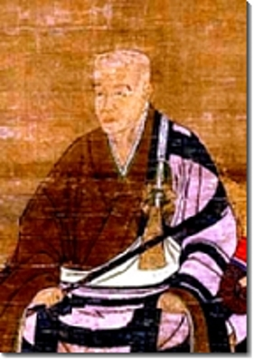
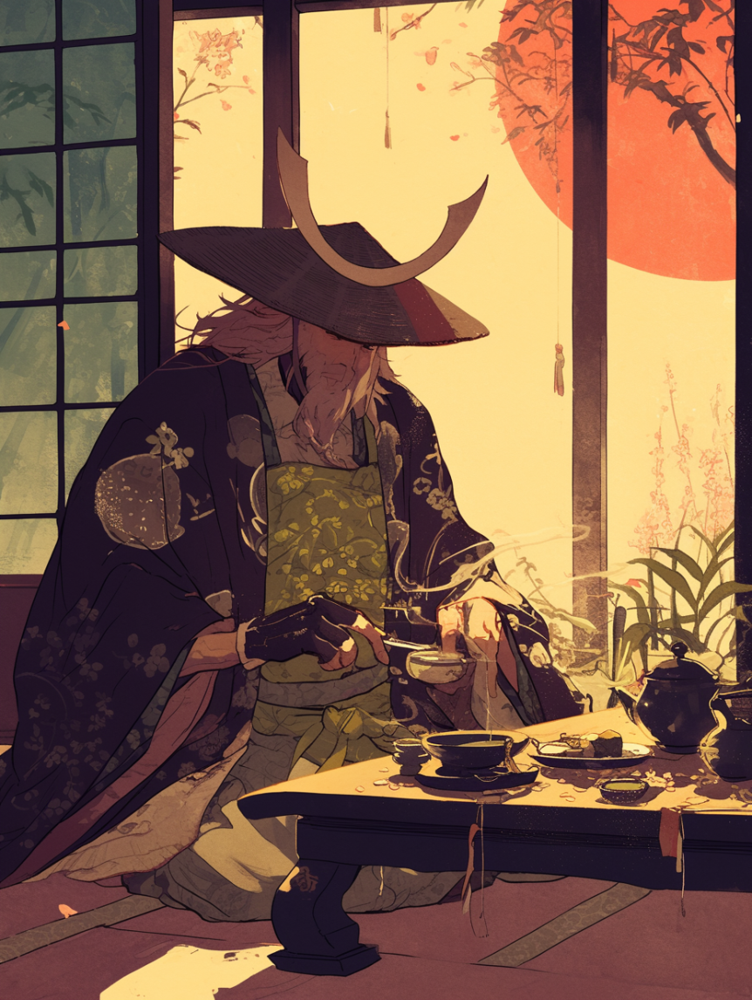
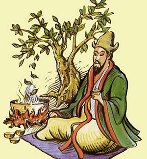

Matcha has their rich history and journey from Chinese Legends which few years later introduced a deep culture tradition in Japan which many of their journey has related of using and growth of Matcha and Tea Ceremony.
Legend of Eisai
Myoan Eisai who's well-known as Yosai Zenji (Zen master Eisai), a Buddhist priest that's known brought green tea seeds safely to Japan from China.
The green tea seed were and used to planted on Mount Sefuri(Japan) that look alike to Mount Tiantai(China) which he supposed plant the seeds there due the environment and land are similar to Moun Tiantai
which makes it acceptable place for tea plants to grow successfully as he seen in China. Eisai give few of seeds to Myoue Shounen
a monk in Kyoto, which he brought to the land of Uji and beginning of Tea Cultivation which earned Eisai a title, "The Father of Tea".
while he's in Uji, he only prepare just a loose-leaf sencha and some of the farmers invent 'Tana',a shade of roof made of straws over the tea bushes which modifies
amount of sunlight that reached the tea leaves which resulting a valued flavored tea that soon became specialty of Uji which then increasingly famous globally.
Although, even if it's different than the one prepared by Eisai, he still get credits for bringing tea to Japan. He also wrote a book about Matcha Benefits and how to prepare
the fragile baverages that's called "Kissa Yojoki 喫茶養生記- How to Stay Healthy by Drinking Tea in 1211" which considered as the oldest Tea Book in Japan.
Matcha and The Samurai
Centuries Back when matcha was before introduced globally, Japanese Tea Ceremony 'Sado' became well-known among
the Samurai Society, Royalty and Upper Class of Japan. Sen no Rikyu, a famous Tea Master in Japan's history that's perfected
the Tea Ceremony and influence its teaching to Samurai Culture even while he's not a Samurai himself. His Zen philosophy on Tea
Ceremonies motive Warriors and Samurais corporate of calm and focus. Matcha's Principle is used for confusing oxymoron
'Alert and Calm' which the Samurai Warriors drink tea before going to war. As for Samurai it isn't just a calm drink, it's for focusing
their mind and calm their spirit before facing the battles of horror to make their mind stay sharp and sustain mental visibility during
action and combat.
This is because from one interesting story. Where once the Shogun himself suffer from a terrible hangover, Eisai or other monks
prepare the Shogun a bowl of Matcha Tea which cure the hangover not long after that which it's where the Shogun began to approve tea for its culture, religious, mental and physical
tea virtues. Soon anew Warrior would have their class begin by holding Tea Parties that shows wealth and power, which they create challenges that relates to Tea that can
win all kinds of amazing rewards.
Legend of Tea Discovery, Emperor Shennong
Back in China, Emperor Shennong that's known as "Divine Herbalist" were just boiling his water with twigs obtain from
Camillia Trea from the wilderness. In the Wilderness, a sudden wind went by which the strong breeze carries few leaves into his boiling watter cauldron.
The leaves combined with the water, it creates a surprising brew where delightful and refreshing aroma filled the air. Which makes SHennong curious then take a sip, to his
heavenly taste, it was pleasant and enjoyable that makes him want to drink more and he did.
That was the first discovery a Cup of Tea, where Shennong is the first tea drinker calling the bew "Ch'a", that mean "To check or investigate". Because it's his way of
reflecting his deep connection to nature's secrets.
Do You Know Matcha...
Click the button if you want to know more facts about Matcha!